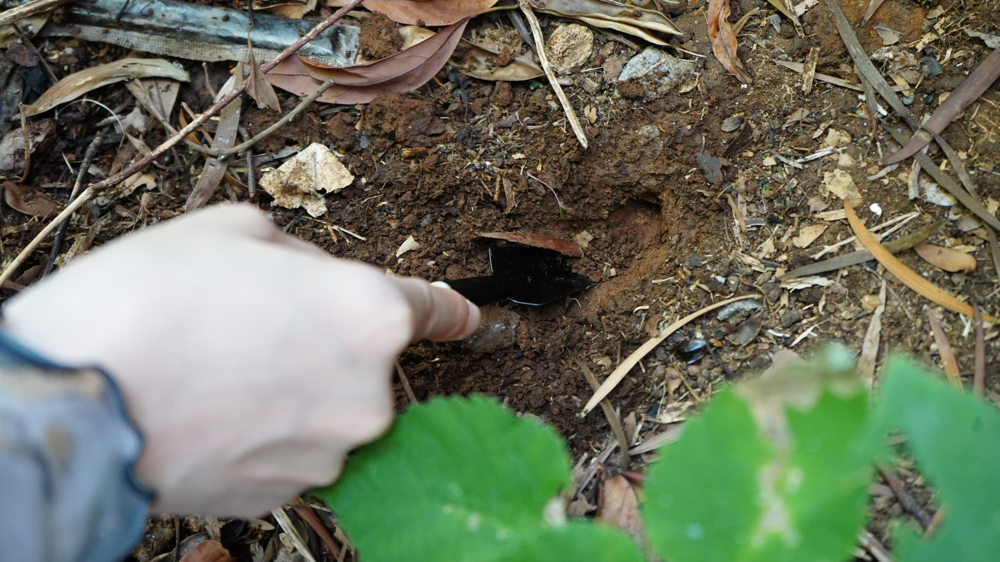
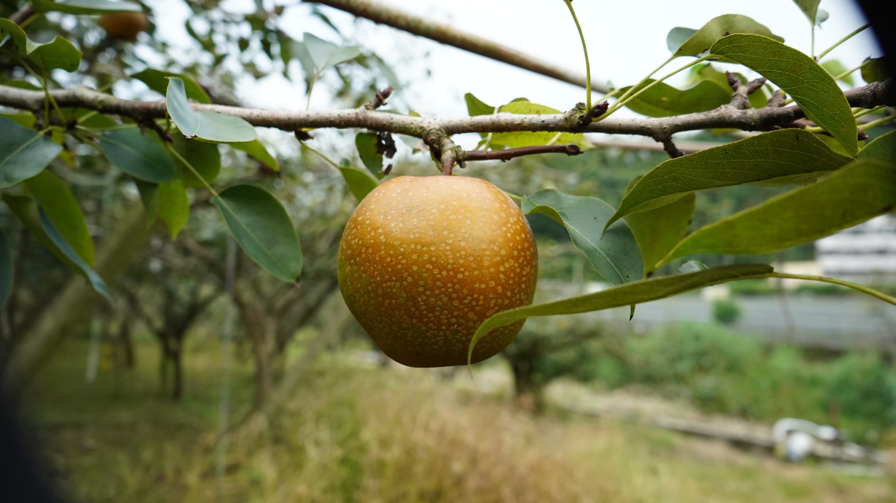
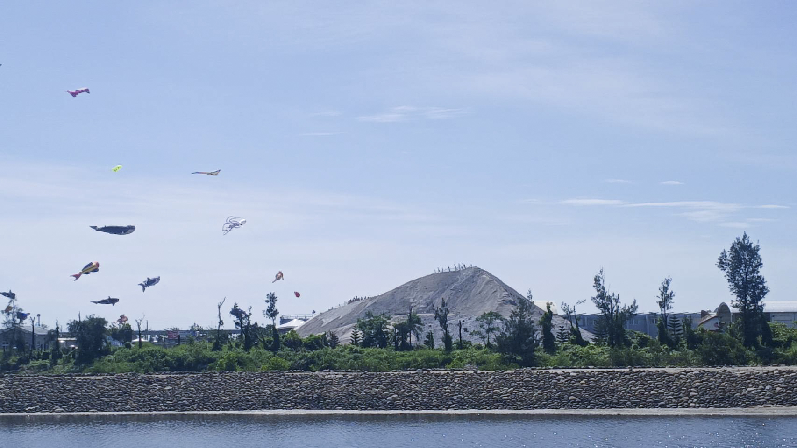
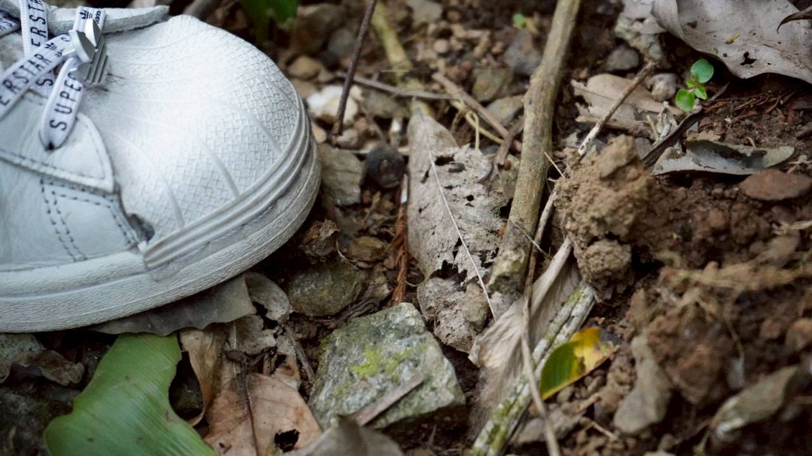

台北｜在硫磺霧氣中，守護那抹消失的橘色血脈
Taipei | Protecting the Vanishing Orange Lineage in Sulfur Mist
在北投，草山柑不僅是一顆水果，更是這片土地流動的血脈。主理人心絨姐自述「流著北投血脈」，自小在草山腳下長大，她記憶中最深刻的味道，就是那抹帶有火山礦物氣息的酸甜。
「草山柑是桶柑的始祖，但復育的路比想像中孤獨。」心絨姐說道。為了不讓這份在地信物消失，她與食雲集的夥伴發起復育運動，找來植物診療師、保價全收，讓近 25 位老農重新燃起鬥志。在溫泉鄉的硫磺霧氣中，她們復植了 300 株苗木，堅持將地產地銷的永續化為口中的康普茶與果醬。
In Beitou, the Caoshan Citrus is not just a fruit, but the flowing blood of this land. Growing up at the foot of the mountain, the most profound memory is the sweet and sour taste with volcanic mineral notes.
"Caoshan Citrus is the ancestor of Tankan, but the road to restoration is lonelier than imagined." To prevent this local token from disappearing, a restoration movement was launched. In the sulfur mist of the hot spring village, 300 saplings were replanted, turning local sustainability into kombucha and jam.

台中｜東勢山坡間的甘露梨執著
Taichung | The Persistence of Ganlu Pears in Dongshi Hills
在台中東勢的山坡間，有一座用心經營的甘露梨果園。這裡的梨子，口感與甜度全由氣候與農人的細心決定。乾旱時，果實糖度升高卻顯得粗硬；雨水過多時，雖然汁水飽滿卻少了香甜。農家面對這些自然挑戰，只能憑經驗調整採收時機，讓每一顆梨子都呈現最佳狀態。
果園以甘露梨為主要品種。農家採用套袋與減少農藥的方式，不僅確保果實安全，也維持口感。熟度的拿捏，是農夫最重要的功夫。這是一段屬於東勢的故事：土地與人共生，甜美梨子是最真誠的回報。
In the hills of Dongshi, Taichung, there is a dedicated Ganlu Pear orchard. The texture and sweetness of the pears here are entirely determined by the climate and the care of the farmers. Facing natural challenges, farmers can only rely on experience to adjust the harvest time.
The orchard mainly grows Ganlu Pears. Farmers use bagging and reduced pesticides to ensure fruit safety and maintain texture. This is a story belonging to Dongshi: the land and people coexist, and the sweet pears are the most sincere return.

台南｜封存在時光裡的純白，鹽田遺址間的感官備忘錄
Tainan | Pure White Sealed in Time, Sensory Memo of Salt Fields
台南的鹽田，是一場關於時間與烈日的馬拉松。雖然台灣在民國 91 年因成本考量全面停止了日曬鹽，但這片土地上依舊留存著關於瓦盤鹽田的記憶。
「雖然曬鹽已經停了，但那份與老天爺博弈的智慧不能丟。」我們與曾見證鹽業興衰的長輩對話。過去，海水需在蒸發池曝曬兩到三週，沈澱出雜質，最終在結晶池中化為純白。這份來自土地的氣息，是我們在遺址間重新採集的、關於烈日與時間最誠實的味道。
The salt fields of Tainan are a marathon of time and scorching sun. Although Taiwan completely stopped solar salt production in 2002 due to cost considerations, memories of the tile-paved salt fields remain on this land.
"Although salt drying has stopped, the wisdom of gambling with God cannot be lost." We spoke with elders who witnessed the rise and fall of the salt industry. This scent from the land is the most honest taste of the scorching sun and time that we recollected among the ruins.

台東｜在會呼吸的土地上，聽見縱谷林間的深呼吸
Taitung | Hearing the Deep Breaths of the Rift Valley on Living Soil
踏入東部縱谷，泥土會隨著季節乾濕膨脹、收縮，像是在緩慢地呼吸。在這裡，我們不談喧囂的訪談，而是跟隨大地的節奏沉靜下來。
走進森林與稻間，空氣中瀰漫著一股濕潤的重量感。這種被稱為「膨轉土」的黏土質地，雖然讓建築變得困難，卻賦予了作物極強的生命張力。晨間的霧氣鎖住了苔蘚的清香，森林裡的芬多精與稻禾生長的氣息交織在一起，形成一種深沉而溫暖的穩定感。
Stepping into the East Rift Valley, the soil expands and contracts with the wet and dry seasons, as if breathing slowly. Here, we do not talk about noisy interviews, but settle down with the rhythm of the earth.
Walking into the forest and rice paddies, the air is filled with a humid heaviness. This clay texture, known as "Vertisols," makes construction difficult but gives crops strong life tension. The morning mist locks in the scent of moss, intertwined with phytoncide from the forest.